2
▲2
▶
2
▲2
▶
【すぐそこ!?】地中を掘って敵を探せ！モグラベッドウォーズ【マイクラ】
ドズル社 · 348,941再生 · 公開 11/17
2
▲2
▶
ドズル社 · 348,941再生 · 公開 11/17
 4
▼2
▶
4
▼2
▶
キヨ。 · 1,360,282再生 · 公開 11/16
 6
→
▶
6
→
▶
KUNの50人クラフト · 163,325再生 · 公開 11/17
 8
▲4
▶
8
▲4
▶
葉ちゅべ · 194,483再生 · 公開 11/17
 10
▼2
▶
10
▼2
▶
牛沢 · 193,360再生 · 公開 11/17
 12
初登場
▶
12
初登場
▶
キャベツの人【ゲーム紹介】 · 333,505再生 · 公開 11/17
 13
▼4
▶
13
▼4
▶
LDH JAPAN · 484,982再生 · 公開 11/16
 14
初登場
▶
14
初登場
▶
ゆうこる/Yuukoru · 301,609再生 · 公開 11/18
 15
▼4
▶
15
▼4
▶
Stray Kids · 1,059,077再生 · 公開 11/17
 16
初登場
▶
16
初登場
▶
Pekora Ch. 兎田ぺこら · 410,615再生 · 公開 11/18
 18
初登場
▶
18
初登場
▶
Miko Ch. さくらみこ · 392,924再生 · 公開 11/17
 20
初登場
▶
20
初登場
▶
ポッキー · 90,065再生 · 公開 11/17
 22
▲24
▶
22
▲24
▶
ライバロリ · 142,472再生 · 公開 11/17
 23
▼2
▶
23
▼2
▶
NiziU Official · 297,920再生 · 公開 11/16
 24
初登場
▶
24
初登場
▶
フブキCh。白上フブキ · 303,332再生 · 公開 11/17
 26
▼2
▶
26
▼2
▶
兄者弟者 · 247,085再生 · 公開 11/17
 28
初登場
▶
28
初登場
▶
Mio Channel 大神ミオ · 195,231再生 · 公開 11/17
 30
初登場
▶
30
初登場
▶
Lamy Ch. 雪花ラミィ · 174,830再生 · 公開 11/17
 32
▼22
▶
32
▼22
▶
みそらくん · 127,247再生 · 公開 11/17
 34
初登場
▶
34
初登場
▶
アカgames · 102,190再生 · 公開 11/17
 36
初登場
▶
36
初登場
▶
ぴくとはうす · 92,233再生 · 公開 11/17
 38
初登場
▶
38
初登場
▶
加賀美 ハヤト/Hayato Kagami · 160,528再生 · 公開 11/18
 40
初登場
▶
40
初登場
▶
ドコムスチャンネル · 91,717再生 · 公開 11/17
 41
▼6
▶
41
▼6
▶
HAGANE · 123,847再生 · 公開 11/16
 42
初登場
▶
42
初登場
▶
よしなま · 84,087再生 · 公開 11/17
 44
初登場
▶
44
初登場
▶
ライキジョーンズ · 118,066再生 · 公開 11/18
 45
▼8
▶
45
▼8
▶
IVE · 443,885再生 · 公開 11/16
 46
初登場
▶
46
初登場
▶
ノゴローチャンネル · 98,750再生 · 公開 11/17
 47
▲2
▶
47
▲2
▶
あまり驚かないガッチマンはホラーゲームばかりやっている · 148,954再生 · 公開 11/17
 48
▼1
▶
48
▼1
▶
SHAKAch · 212,433再生 · 公開 11/17
 49
▼7
▶
49
▼7
▶
Latte · 75,648再生 · 公開 11/17
 50
初登場
▶
50
初登場
▶
中村悠一 · 182,385再生 · 公開 11/17
 1
初登場
▶
1
初登場
▶
Juice=Juice · 240,027再生 · 公開 11/17
 3
▼2
▶
3
▼2
▶
XG · 912,241再生 · 公開 11/17
 5
▼2
▶
5
▼2
▶
初星学園 · 909,089再生 · 公開 11/16
 7
初登場
▶
7
初登場
▶
Travis Japan · 81,290再生 · 公開 11/18
 9
▼4
▶
9
▼4
▶
HYBE LABELS · 9,201,962再生 · 公開 11/16
 11
▼4
▶
11
▼4
▶
STARGLOW Official · 476,751再生 · 公開 11/16
 17
→
▶
17
→
▶
ふぉ〜ゆ〜ちゅ〜ぶ · 90,695再生 · 公開 11/17
 19
▼6
▶
19
▼6
▶
ONE N' ONLY TV · 221,185再生 · 公開 11/16
 21
▼6
▶
21
▼6
▶
TOMORROW BY TOGETHER - Topic · 394,891再生 · 公開 11/16
 25
▼6
▶
25
▼6
▶
ROF-MAO - Topic · 280,667再生 · 公開 11/15
 27
初登場
▶
27
初登場
▶
JO1 - Topic · 4,818再生 · 公開 11/18
 29
▼6
▶
29
▼6
▶
ATEEZ · 379,028再生 · 公開 11/17
 31
▼6
▶
31
▼6
▶
CUTIE STREET · 117,629再生 · 公開 11/16
 33
初登場
▶
33
初登場
▶
ファントムシータ · 56,828再生 · 公開 11/17
 35
▼4
▶
35
▼4
▶
Kamui · 113,590再生 · 公開 11/16
 37
▼10
▶
37
▼10
▶
Arata Toriumi - Topic · 18,799再生 · 公開 11/14
 39
▼6
▶
39
▼6
▶
THE FIRST TAKE · 1,501,226再生 · 公開 11/15
 43
▼14
▶
43
▼14
▶
Keisuke Kuwata - Topic · 62,376再生 · 公開 11/15
 3000万回
NEW
3000万回
NEW
中日新聞Web · 17 Nov · @uclaspiritsquad ♥608
 133万回
NEW
133万回
NEW
Yahoo!ニュース · 17 Nov · @ireba_and_me ♥13,537
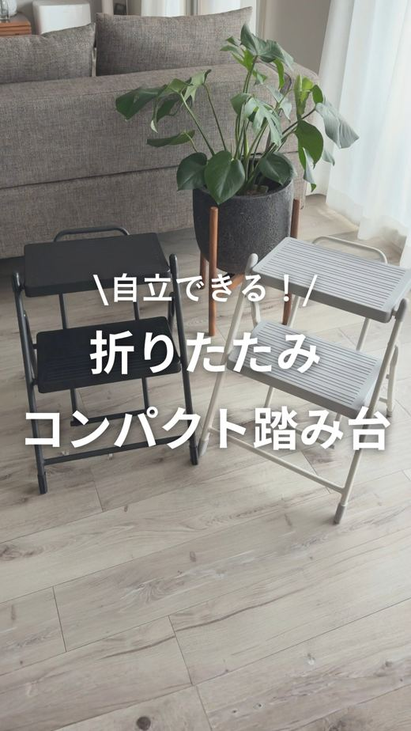
72万回オリコンニュース · 16 Nov · @cainz_official ♥4,549
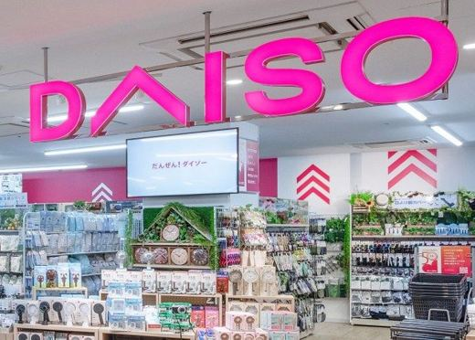
45万回Excite エキサイト · 16 Nov
 20万回
NEW
20万回
NEW
Excite エキサイト · 16 Nov
Excite エキサイト · 17 Nov
八王子ジャーニー · 17 Nov · @802dabe ♥2,265
games.gg · 17 Nov
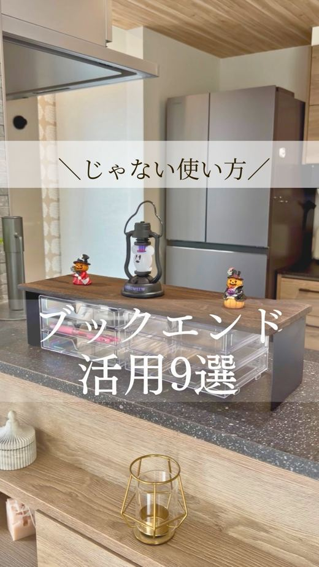
NEWねとらぼ · 17 Nov · @kona_kurashi_ ♥2,902
日本ネット経済新聞 · 16 Nov
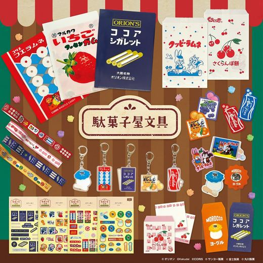
NEWオリコンニュース · 17 Nov · @daiso_official ♥15,639
cinemacafe.net · 17 Nov
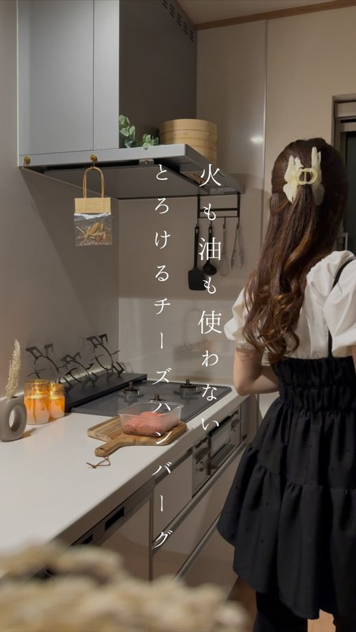
オリコンニュース · 16 Nov · @aya_life_gohan ♥34,204
オリコンニュース · 16 Nov
ニコニコニュース · 17 Nov
ヨムーノ · 17 Nov
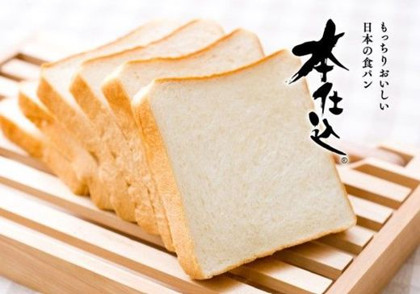
NEWめざましmedia · 17 Nov
Infoseek · 17 Nov
マイナビニュース · 17 Nov
まいどなニュース · 17 Nov
CanCam.jp · 17 Nov
Yahoo!ニュース · 17 Nov
storyweb.jp · 17 Nov
 NEW
NEW
オトナンサー · 17 Nov
AGARA 紀伊民報 · 17 Nov
Yahoo!ニュース · 17 Nov
ヨムーノ · 17 Nov
ねとらぼ · 17 Nov · @listatsurayya ♥13,670
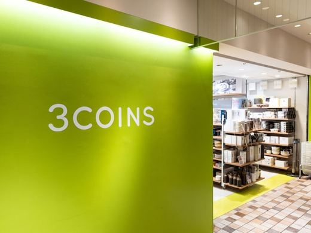
NEWｄメニューニュース · 17 Nov
 NEW
NEW
ｄメニューニュース · 17 Nov
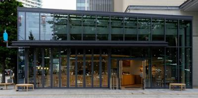
11/18 08:00 🗼 千葉Blue Bottle Coffee Japan合同会社のプレスリリース 「RITUALS OF WELCOME」のコンセプトを
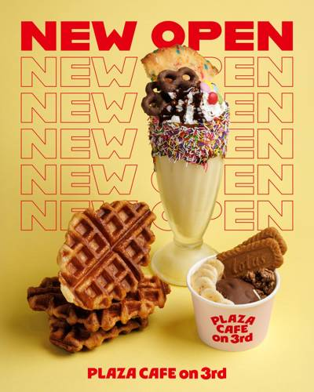
11/17 18:19 🗼 新宿株式会社スタイリングライフ・ホールディングス プラザスタイル カンパニーのプレスリリース NYで人気再燃中の「フローズンヨーグル
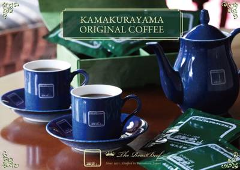
11/17 15:00 🗼 鎌倉株式会社レストラン鎌倉山のプレスリリース 名門の美食の余韻に寄り添う、確かなコクとすっきりした苦味。特別なディナーの締めくくりに
株式会社JR東日本クロスステーションのプレスリリース 昨年度に続く、地元生産者✕リエール藤沢の連携第2弾！藤沢市産野菜とともに広
ゴディバ ジャパン株式会社のプレスリリース ～2027年1月8日（金）より～ ゴディバ ジャパン株式会社（東京都港区）は、バレン
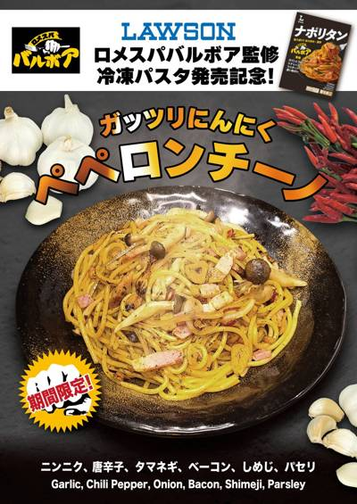
11/17 11:00 🗼 東京株式会社WDI JAPANのプレスリリース お店でしか味わえないとっておきの一皿が登場！ 販売期間：2026年11月17日（火）
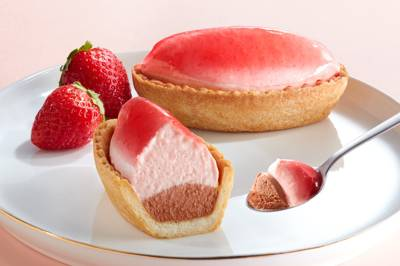
11/17 11:00 🗼 東京株式会社アイルのプレスリリース 「ザカンパネラ生タルトルビー」は11月20日（金）より季節限定で販売開始。大丸東京店を皮切りに、
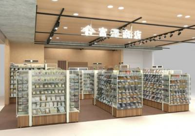
11/17 10:10 🗼 東京株式会社富澤商店のプレスリリース ～リニューアルオープン記念のお楽しみ袋やスプレッド特別セールを実施～ 日本最大級の製菓・製パン
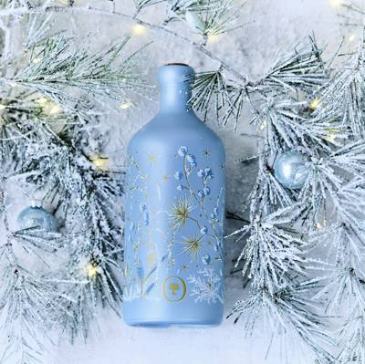
11/17 10:00 🗼 東京株式会社イル・ド・フランスのプレスリリース 2026年のテーマは「白銀のヴェールをまとった、冬の地中海」。太陽の光に輝くいつもの
株式会社ロッテのプレスリリース 雪見だいふくのもち米「雪見だいふく米（まい）」が当たる！？今だけ限定キャンペーンも開催予定！ 株
株式会社セブン‐イレブン・ジャパンのプレスリリース ～11月17日（火）より沖縄県内のセブン‐イレブンで順次展開～ 株式会社セ
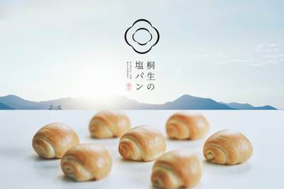
11/17 17:00 🚄 群馬株式会社 スタイルブレッドのプレスリリース 全国5,000以上のホテルやレストランに加え、定期便やギフトを通じてご自宅にもパン
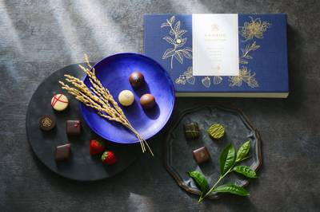
11/17 15:00 ❓ 不明株式会社メリーチョコレートカムパニーのプレスリリース ～2026年12月23日（水）より予約開始～ チョコレートをはじめとする贈
森トラスト・ホテルズ＆リゾーツ株式会社のプレスリリース 期間：2026年12月1日(火)～2027年3月31日(水) 本リリース
株式会社食品産業新聞社のプレスリリース ～発想と技術で定番を進化、新市場を創出～ 食品産業新聞社（本社：東京都台東区、代表取締
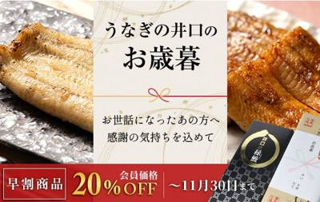
11/17 14:20 🚄 静岡有限会社うなぎの井口のプレスリリース 全商品とも大きめのサイズでご贈答に。産地証明書付き蒲焼や食べ比べを贈る冬ギフト、11月30
西日本旅客鉄道株式会社のプレスリリース ～創業120年の川中醤油と共同開発。広島の魅力を食卓へ届ける「SUTEKI COLLEC
カンロ株式会社のプレスリリース ～エアレーション製法によるふわもち食感！まろやかないちごミルク味～ カンロ飴やピュレグミなどで
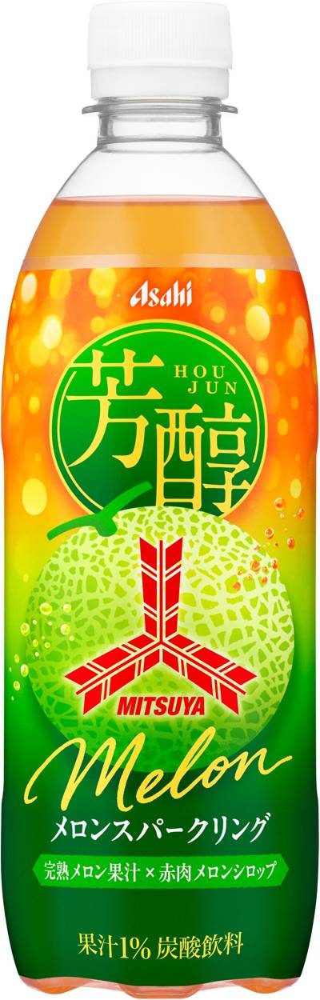
11/17 14:00 ❓ 不明アサヒ飲料株式会社のプレスリリース 完熟メロンの甘さと華やかな香りが特長 アサヒ飲料株式会社（本社 東京、社長 近藤佳代子）は
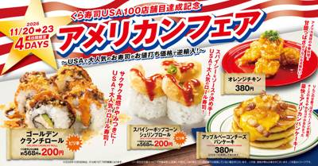
11/17 14:00 ❓ 不明くら寿司株式会社のプレスリリース 現地で人気の商品やアメリカの定番料理を再現した新商品が登場！ 「くら寿司USA100店舗目達成
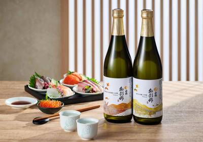
11/17 14:00 ❓ 不明白鶴酒造株式会社のプレスリリース ～幻の酒米「山田穂」と酒米の王様「山田錦」で仕込んだ日本酒へ～ 白鶴酒造株式会社は、直営店限定
株式会社ビジュピコのプレスリリース 鶏の旨みが凝縮した清湯（ちんたん）スープが魅力の「速水もこみち流とりとたいラーメン」と、徳島
グレイス株式会社のプレスリリース 姉妹ブランド「wanna manna」とコラボ。台湾式豆乳スープと蛋餅を、11月20日（金）か
株式会社プレナスのプレスリリース 11.18(水)～12.31(木)の期間開催 株式会社プレナスは、持ち帰り弁当の「Hotto
ほっともっとのプレスリリース 株式会社プレナスは、持ち帰り弁当の「Hotto Motto (ほっともっと)」を、2026年10月
明星食品株式会社のプレスリリース 「チャルメラ」と「笑点」、ともに60周年の記念コラボ 「めでたい」鯛だし、「福来たる」ふぐだし
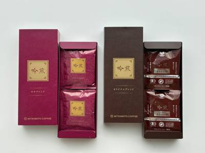
11/17 12:50 🌐 全国三本珈琲株式会社のプレスリリース 2026年歳暮ギフトとして11月20日（金）よりオンライン販売開始 （左）吟煎モカブレンド（1
Ｆ＆Ｐジャパン株式会社のプレスリリース Ｆ＆Ｐとカゴメはコラボメニューの販売に合わせ、店頭およびSNSにてプレゼントキャンペーン
株式会社Cake.jpのプレスリリース ～クッキー缶やミニタルトなどを展開、Cake.jp公式サイトでの販売開始に続き、順次販売
株式会社物語コーポレーションのプレスリリース 株式会社物語コーポレーション(本社:愛知県豊橋市/代表取締役社長:加藤 央之)が全
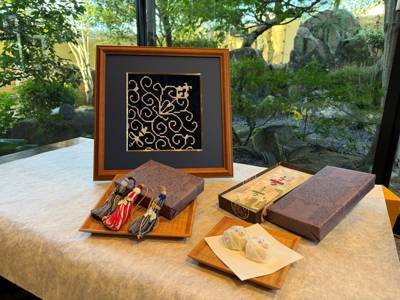
11/17 11:30 🚄 兵庫株式会社 東浜のプレスリリース 創業以来、伝統の味を守り続けてきたかん川本舗が赤穂緞通工房ギャラリー東浜と協力し、名物「塩味饅頭
株式会社セブン‐イレブン・ジャパンのプレスリリース 〜ハーゲンダッツ共同開発初の“ハート模様”が登場！「スペシャリテジャポネ 抹
株式会社ニュートリベースのプレスリリース 塩・こしょう・しょうゆに続く“食卓の4本目”をお披露目 5児の母・辻希美さん「Ayoの
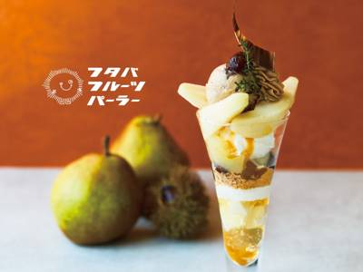
11/17 11:10 🚄 山形カフェ・カンパニー株式会社のプレスリリース 秋の味覚の贅沢なマリアージュ。芳醇な香りと、2つの食感・香りのコントラストを楽しむ、
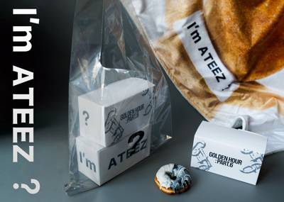
11/17 11:00 ❓ 不明株式会社ｐｅａｃｅ ｐｕｔのプレスリリース 日本では11月17日（火）から国内5店舗で開始 生ドーナツ専門店「I’m donu
株式会社プレナスのプレスリリース 11.18(水)～11.27(金)の期間開催 株式会社プレナスは、持ち帰り弁当の「Hotto
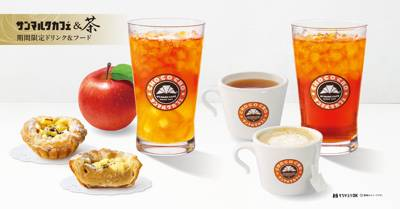
11/17 11:00 ❓ 不明株式会社サンマルクカフェのプレスリリース 株式会社サンマルクカフェ（京都本社：京都市下京区 代表取締役社長：小山典孝）は、お茶に
株式会社DAY TO LIFEのプレスリリース 株式会社DAY TO LIFE（本社：大阪府大阪市北区、代表取締役：杉内健吉）が
ほっともっとのプレスリリース 株式会社プレナスは、持ち帰り弁当の「Hotto Motto (ほっともっと)」を、2026年10月
株式会社ナショナルトータルビバレッジのプレスリリース 500mlでは途中で空になり、2ℓでは持ち歩けない。サウナのあいだに飲み切
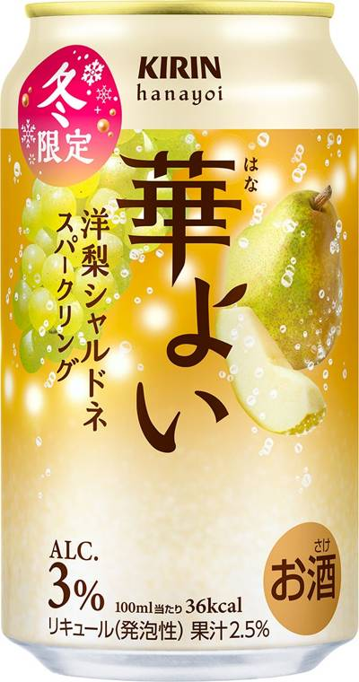
11/17 11:00 ❓ 不明キリンホールディングス株式会社のプレスリリース キリンビール株式会社（社長 堀口英樹）は、お酒ならではのこころ華やぐひとときを
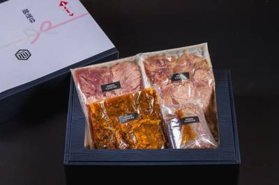
11/17 10:30 ❓ 不明株式会社Globridgeのプレスリリース 〜「1万円以内で、ちゃんと喜ばれるお歳暮」を牛タン専門店が本気で考えた〜 株式会社G
TAKUMI Collectionのプレスリリース 「暮らしの中に、久留米絣を。」を掲げるTAKUMI Collectionが、
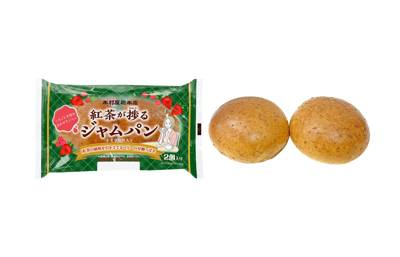
11/17 10:00 ❓ 不明株式会社木村屋總本店のプレスリリース 全粒粉の香ばしい生地といちご＆木苺のジャム 株式会社木村屋總本店（本社所在地：東京都江東区
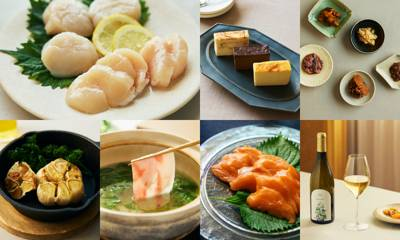
11/17 10:00 🚄 北海道株式会社 帝国ホテルのプレスリリース 帝国ホテルのオンラインモール「ANoTHER IMPERIAL HOTEL」 海の幸から、
株式会社パティシエ エス コヤマのプレスリリース 徳島県・吉野川の青のりと柚子を使った新作や、4種を食べ比べる「4つの風景」、1
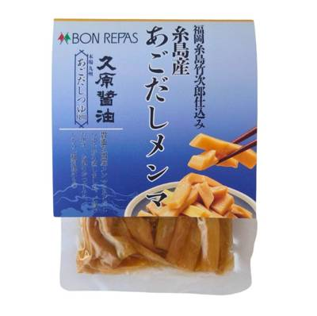
11/17 09:35 🚄 福岡株式会社竹次郎のプレスリリース 〜 極上の出汁香る、手土産や贈答にふさわしい逸品 〜 報道関係者各位
亀屋良長株式会社のプレスリリース 亀屋良長が贈る、和のクリスマス。まるでシュトーレンのような、つくね芋の焼き菓子がWEB限定で新
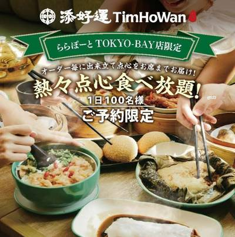
11/17 11:00 🗼 千葉株式会社WDI JAPANのプレスリリース このチャンス、見逃したらもったいない！11月17日（火）より予約受付を開始 販売期間
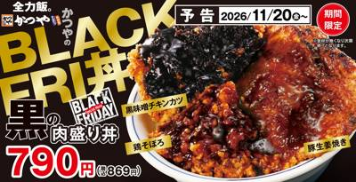
11/17 10:00 🗼 神奈川アークランドサービスホールディングス株式会社のプレスリリース 毎年人気の「黒味噌チキンカツ」に生姜焼き＆特製鶏そぼろを豪快合い盛
ニラックス株式会社のプレスリリース ＜＜ 2026年11月19日（木）よりご提供開始 ＞＞ ペルティカのHPはこちら 唯一無二の
株式会社近鉄リテーリングのプレスリリース キービジュアル 株式会社近鉄リテーリングは、Time’s Place西大寺内の「幸福（
株式会社ジョイフルのプレスリリース ファミリーレストラン 「ジョイフル」 を運営する株式会社ジョイフル (本社：大分県大分市
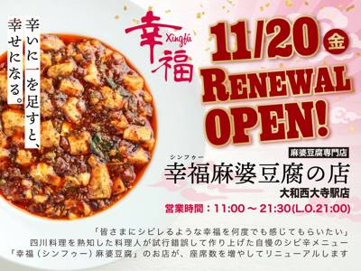
11/17 14:00 ❓ 不明株式会社近鉄リテーリングのプレスリリース 株式会社近鉄リテーリングは、Time’s Place西大寺内の「幸福（シンフゥー）麻婆
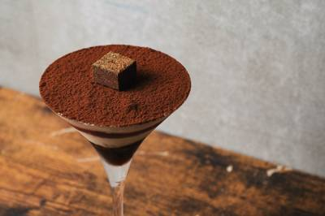
11/17 11:00 🚄 鳥取株式会社OMOIのプレスリリース 〜5層の味わいが楽しめる冬にぴったりの贅沢パフェ〜 株式会社OMOI（代表取締役 川村 諒志）
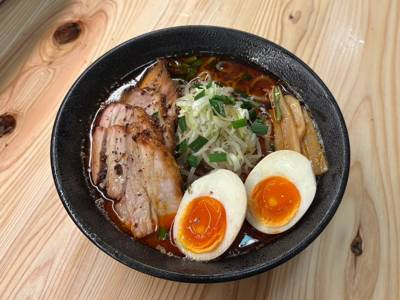
11/17 10:00 🚄 福岡IIN合同会社のプレスリリース ラーメン酒場『ICHIGO ICHIE』グランドオープン記念！夜限定「ハイボール100円」キャン
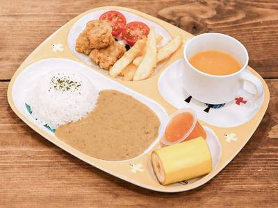
11/17 09:00 🚄 京都株式会社ヒューマンフォーラムのプレスリリース 辛味のないやさしい味わいの「じゃがいもの白カレー」が加わり、お子さまがキッズプレー
株式会社三匠のプレスリリース 「四川麻辣湯 星星倶楽部」のFC一号店である自由が丘店を手がける株式会社須永企画が2店舗目を本社所
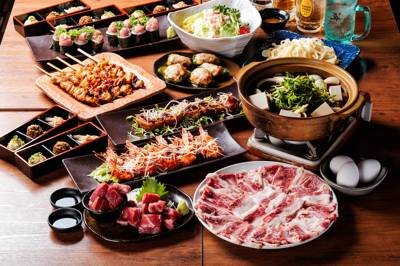
11/17 16:56 🗼 東京ワタミ株式会社のプレスリリース ～物価高の反動“メリハリ消費”で「メイン肉倍盛り（100%増量）」に予約集中、11月30日締切の
株式会社K-KING foodsのプレスリリース 神戸西部市場のセリで一頭買いしたメス和牛を「上赤身」「希少部位2種盛り」など4
株式会社モンテローザのプレスリリース 11月18日（水）・19日（木）は店内飲食メニューが半額！20日（金）は料理またはドリンク
ワタミ株式会社のプレスリリース 「bb.qオリーブチキンカフェ」を含む全16店舗で11月17日（火）～23日（月・祝）まで開催
株式会社パソナグループのプレスリリース 株式会社パソナふるさとインキュベーションでは、株式会社サンリオの人気キャラクター「ハロー
株式会社モンテローザのプレスリリース 2026年11月18日（水）～20日（金）の3日間限定！店内でお召し上がりのメニューが全品
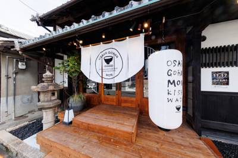
11/17 14:30 🚄 大阪株式会社ワンダライフのプレスリリース 大阪市内を中心に飲食店を運営する株式会社ワンダライフ(所在地：大阪府大阪市北区、代表取締役
株式会社お茶村のプレスリリース ぬか漬けだけではもったいない！購入者からは「きな粉に似た香ばしさ」との声も。ヨーグルトからお味噌
日本フェレロ株式会社のプレスリリース この冬、ホリデーシーズンの特別なひとときを、フェレロ ロシェの黄金の輝きで素敵な思い出に。
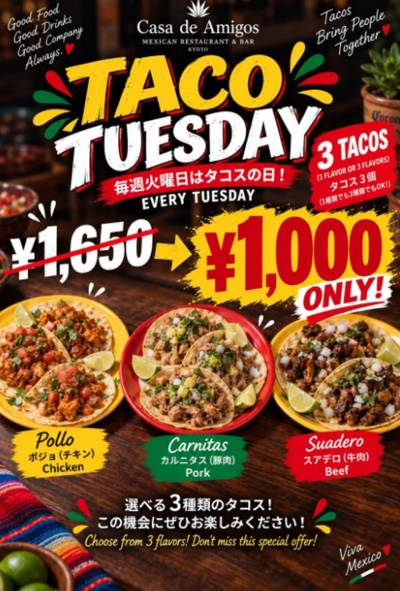
11/17 12:00 🌐 全国株式会社TOAIのプレスリリース 鶏・豚・牛をお好みの組み合わせで。はじめての方も食べ比べOK。 全国213店舗を展開し、西日本
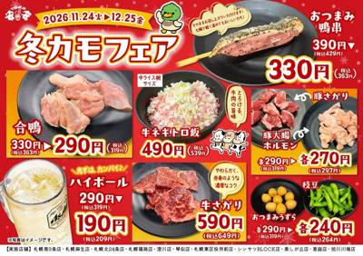
11/17 11:01 🚄 北海道株式会社富士達のプレスリリース ～鴨の旨みを気軽に楽しめる！人気の焼肉メニューや新登場「牛さがり」「牛ネギトロ飯」も特別価格でご
SRSホールディングス株式会社のプレスリリース ~河本準一さんプロデュースの米麴甘酒を使用したデザートも数量限定販売～ 株式会社
株式会社 With Pet Familyのプレスリリース 通常のハッピーアワーより長く、20時までのご注文が対象！特別仕入れの旨
株式会社壱番屋のプレスリリース －12月４日（金）より全国のカレーハウスCoCo壱番屋店頭で販売開始－ 株式会社壱番屋（本社：
株式会社ケイシイシイのプレスリリース 株式会社ケイシイシイ(本社:北海道千歲市)が展開する、ルタオのチョコレート専門店「ヌーベ
GYRO HOLDINGS 株式会社のプレスリリース 11月17日（火）～25日（水）の9日間限定。"11（いい）&q
株式会社ヒューマンフォーラムのプレスリリース 株式会社ヒューマンフォーラム(本社:京都市中京区)が運営する若者向けアパレル事業を
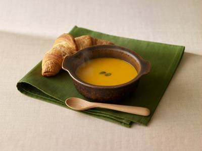
11/17 13:00 ❓ 不明有限会社a.crescentのプレスリリース 天然酵母クロワッサン専門店「三日月屋」を運営する有限会社a.crescent（本社
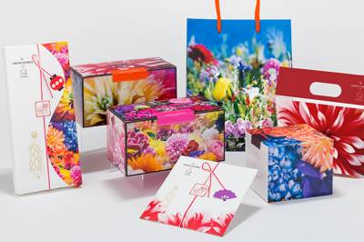
11/17 11:00 ❓ 不明創業30周年を記念し、世界的に活躍するアーティスト 蜷川実花氏がディレクションするブランドとコラボ。 京都発祥のマーブルデニッシ
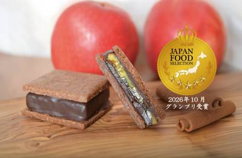
11/17 10:45 🚄 松本株式会社彩香が運営する、長野県松本市のチョコレート専門店「信州ショコラトリーGAKU」の「GAKUチョコレートサンド【信州りんご
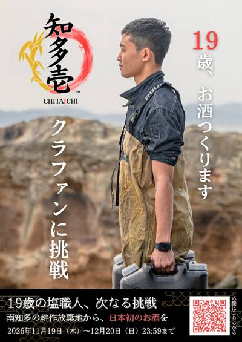
11/17 10:30 🚄 愛知株式会社知多壱のプレスリリース 代表はまだお酒を飲めない19歳。クラファン最終日の12月20日に20歳を迎えます。南知多町の耕作
株式会社SANKO MARKETING FOODSのプレスリリース 蒲田で愛される讃岐うどん店『うどん038』、事業譲受から約5
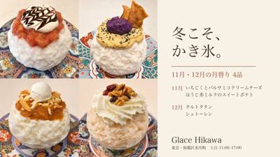
11/18 08:30 🗼 東京Glace Hikawaのプレスリリース 削りたての氷を、佐賀・有田焼の器で。いちじく、スイートポテト、タルトタタン、シュトーレ
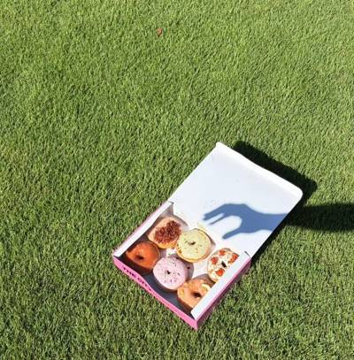
11/17 21:22 🗼 新宿株式会社パダワンのプレスリリース 2026年8月1日に神戸の人気店【THE CITY DONUTS】が東京初上陸した。新宿御苑で
新宿夜市実行委員会のプレスリリース ～入場無料、金曜・土曜・祝前日は翌朝5時まで営業～ 眠らない街・歌舞伎町に、食べて、飲んで、
三菱地所株式会社（三菱一号館美術館）のプレスリリース 三菱一号館美術館で開催中の「フォンタネージ――イタリアの光・心の風景」展［
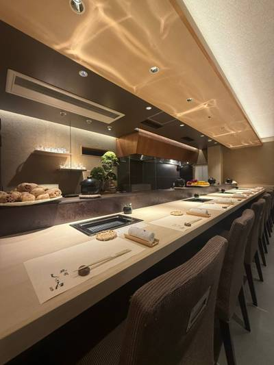
11/17 15:22 🗼 東京株式会社Ｊイノベーションのプレスリリース 隈研吾氏が関わった建築を舞台に、和牛・割烹の技術・日本のおもてなしを融合。「焼肉なのに
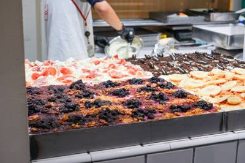
11/17 14:17 🗼 東京株式会社ZOTのプレスリリース バナナ＆クッキーからプロシュート＆チーズまで。手作りのドーナツにクリームと具材を重ねた4種を、1
株式会社トランジットホールディングスのプレスリリース 〜目の前に運ばれるワゴンから好きなケーキを自由にセレクト。スペシャリテのフ
BOC Japan合同会社のプレスリリース 「銀座 台楽蛋糕(タイラクタンガオ)」2026年11月19日－11月24日まで、「台
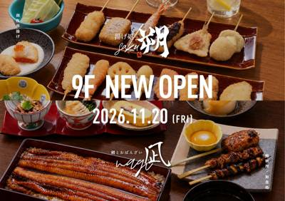
11/17 13:30 🗼 横浜株式会社横浜岡田屋のプレスリリース 株式会社横浜岡田屋（所在地：神奈川県横浜市、代表取締役：岡田 伸浩）が運営するショッピングセ
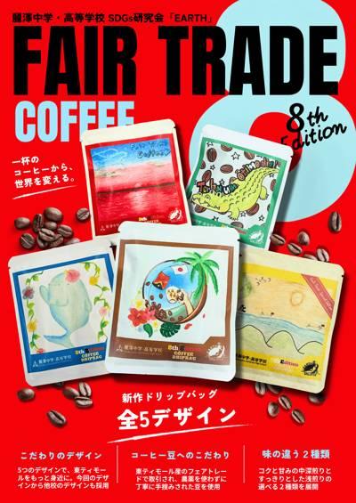
11/17 13:00 🗼 千葉麗澤中学・高等学校のプレスリリース 麗澤中学・高等学校（千葉県柏市／校長：櫻井 讓）のSDGs研究会「EARTH」が、東ティモ
株式会社アドリープのプレスリリース ～厳選和牛と冬の美味が織りなす、囲炉裏の温もりとともに味わう贅沢な全9品～ 飲食店の経営、
ワインエナジー株式会社のプレスリリース 全国222名が挑んだオンライン予選を突破。決勝は当日の敗者復活戦から1名が加わり9名で開
コンラッド東京のプレスリリース いちごが彩る、ベルベットのように優雅で心ほどけるティータイム。バレンタインを迎える2月には、期間
株式会社大庄のプレスリリース 株式会社大庄（東京都大田区／代表取締役社長：平了壽）は、2026年11月18日（水）、東京駅直結の
株式会社オークラ ニッコー ホテルマネジメントのプレスリリース 「プレーン」「ピスタチオラズベリー」「ショコラ」の3種類をご用意
株式会社無為のプレスリリース イタリアのデザインスタジオ「Happycentro」と取り組んだブランドリニューアルが国際的に評価
株式会社Global Strideのプレスリリース 大阪・関西万博で1日1,000杯以上を販売したネパール産コーヒー。代官山で3
ニラックス株式会社のプレスリリース 【オープン日】2026年12月4日（金） ～ 海風香る豊洲に誕生する、五感を満たす「食の楽園
 11/17 08:50
🗼 銀座
11/17 08:50
🗼 銀座
株式会社eatopiaホールディングスのプレスリリース 「ストップ」と言うまで料理が続くおまかせストップ焼肉コース 8,000円
株式会社紀ノ國屋のプレスリリース 素材や製法にこだわった、個性豊かなチョコレートが勢ぞろい。カカオの芳醇な風味から、ナッツやフル
株式会社スタンドケイのプレスリリース ジュワッと焼ける牡蠣に、アツアツの鍋、遊び屋台まで！食べて、飲んで、遊んで大盛り上がり！水
株式会社スタンドケイのプレスリリース 仕事帰りに、仲間と乾杯！焼きたての牡蠣に、アツアツのごちそう。熊谷駅前に、冬の夜を盛り上げ
株式会社PAGE7のプレスリリース 現代ギャラリーの隠し扉の奥に潜む「ギャラリーの中のギャラリー」。世界的スタジオHVNの空間に
朝霧乳業株式会社のプレスリリース 富士山の麓から、首都圏の毎日に“やさしいミルクスイーツ”を。／2026年11月17日より販売開
株式会社ホテルマネージメントジャパンのプレスリリース ホテル オリエンタル エクスプレス 鹿児島天文館（所在地：鹿児島県鹿児島市
カッパ・クリエイト株式会社のプレスリリース ２０２６年１１月２６日（木）より、かっぱ寿司全店にて販売開始 コロワイドグループの
株式会社グレイン・エス・ピーのプレスリリース 生産者・実需者が調達と販路開拓の事例を共有 株式会社グレイン・エス・ピーは、令和8
株式会社コメダのプレスリリース 全国にフルサービス型の喫茶店を展開する株式会社コメダ[本社：愛知県名古屋市 代表取締役社長：甘利
 11/17 15:26
❓ 不明
11/17 15:26
❓ 不明
生活クラブ事業連合生活協同組合連合会のプレスリリース 生活クラブ共済事業連合生活協同組合連合会（本部：東京都新宿区、会長：柳下信
株式会社ホテル金沢のプレスリリース 新年会や春のお祝い、北陸へのご旅行に。ズワイ蟹の鍋や天ぷら、押し寿司など多彩な逸品を一度に味
株式会社アップライジングのプレスリリース 山崎18年・白州18年を筆頭に、人気銘柄のみを厳選した特別仕様の第6弾 タチバナE酒販
イージーリンク株式会社のプレスリリース クリスマスはみんなで同じケーキを。熟練のパティシエが丁寧に手作りした、グルテンフリー＆卵
エコール・クリオロ株式会社のプレスリリース エコール・クリオロ株式会社（本社：東京都板橋区、代表取締役：久保田令）が展開するクリ
株式会社成城石井のプレスリリース ～世界中から厳選した“おいしいもの”を九州の皆様にご提案します～ 株式会社成城石井（本社事務所
タリーズコーヒージャパン株式会社のプレスリリース 2026年11月18日（水）オープン タリーズコーヒージャパン株式会社（本社：
カッパ・クリエイト株式会社のプレスリリース ２０２６年１１月２６日（木）より、かっぱ寿司全店にて販売開始 コロワイドグループの
ストリングスホテル東京インターコンチネンタルのプレスリリース 品川のラグジュアリーホテル、ストリングスホテル東京インターコンチネ
 11/17 14:00
❓ 不明
11/17 14:00
❓ 不明
味の素株式会社のプレスリリース 第47回日本肥満学会および第13回日本サルコペニア・フレイル学会大会で発表 味の素株式会社(社
三菱地所ホテルズ＆リゾーツ株式会社のプレスリリース ザ ロイヤルパークホテル アイコニック 名古屋（所在地：名古屋市中区栄4-1
株式会社焼肉坂井ホールディングスのプレスリリース ～ ぶりに、ほっこり安納芋スイーツなど9種類の期間限定メニューをお楽しみくださ
Ｇ－ＦＡＣＴＯＲＹ株式会社のプレスリリース 1,000株以上を1年以上保有で35,000円分に（2027年12月末基準から）。ペ
株式会社バンズダイニングのプレスリリース 鮮魚で親しまれる「伊達のくら」が、仙台中央店では火を使った料理を新たな看板に。炉端を望
株式会社本田Jファームのプレスリリース 旧保育園を再生した完全閉鎖型工場で、通年でいちご栽培を実現 公式キャラクター 兼 ブラン
有限会社a.crescentのプレスリリース ※画像はイメージです 天然酵母クロワッサン専門店「三日月屋」は、2026年11月2
 11/17 13:00
🚄 静岡
11/17 13:00
🚄 静岡
株式会社JFLAホールディングスのプレスリリース 「ららぽーと磐田」に 11/17（火）～ 11/23（月） 出店します！ 株式
ユーアールエー株式会社のプレスリリース 長さ80cmのペッパーミルで黒胡椒を挽き、目の前で仕上げる看板カルボナーラ。淡路麺業のも
株式会社グラナダのプレスリリース JR博多駅「シティダイニングくうてん」9階に誕生。11月17日より予約受付を開始 オランダの感
株式会社日本システムのプレスリリース 株式会社MIROKUは、地域で育てたお米を、家庭の食卓からホテル・レストランまで届けます
中京テレビ放送株式会社のプレスリリース WELLNESS WORLD NAGOYA 2026ビジュアル 中京テレビ放送株式会社(
株式会社 明治のプレスリリース 株式会社 明治（代表取締役社長：八尾 文二郎）と北海道情報大学（学校法人電子開発学園 理事長：西
株式会社ラショナル・ジャパンのプレスリリース 「Lean Excellence」特別賞の授賞式にて。左からT&O Gro
スーパープロジェット株式会社のプレスリリース 先行予約プランでテイスティングコースを楽しむ 農口尚彦杜氏 オーフより徒歩5分にあ
エースシステム株式会社のプレスリリース 「過熱水蒸気で食革命を起こす」を掲げるエースシステム株式会社（本社：大阪府和泉市、代表
株式会社伊勢甚本社 水戸プラザホテルのプレスリリース 目的にあわせて会場のセレクトが可能！総会や研修会、社内表彰式など、企業・団
一般社団法人 赤飯文化啓発協会のプレスリリース お赤飯の無料頒布、原料の展示や歴史を紹介 お赤飯の消費拡大への活動を行っている一
江崎グリコ株式会社のプレスリリース 座っている時間にも使われる「安静時エネルギー消費」に着目 江崎グリコ株式会社は、全国の20～
株式会社関電アメニックスのプレスリリース 2026クリスマスフルコース特別ディナー予約販売を開始 京都駅徒歩2分の好立地にあるホ
株式会社オークラ ニッコー ホテルマネジメントのプレスリリース 天然鰤やとらふぐなど冬の味覚を使用した料理と、淡路島産苺や柑橘の
東急リゾーツ＆ステイ株式会社のプレスリリース 17 素材の滋味と「信濃地鶏」の旨みが溶け合う「藥膳鶏翅蒸湯（薬膳スープ）」を 1
株式会社下鴨茶寮のプレスリリース 自社ECの購買データから見る贈答・自家需要の動向 お歳暮や年末年始の贈りものを選ぶ季節。お世話
株式会社パソナグループのプレスリリース 瀬戸内海を望む絶景と心地よい波音に包まれるモダン蕎麦割烹「Oh-SOBAR」では、ふぐ皮
オイシックス株式会社のプレスリリース 〜 一年を通じ食卓を支える生産者と会員の気持ちが通じ合う、期間限定特設サイトも公開（11/
株式会社オーイズミフーズのプレスリリース ～北海道産の食材を活かしたパスタやピッツァ、5種類の魚介を盛り合わせた店の代表メニュー
株式会社BAKEのプレスリリース 2026年11月24日（火）より期間限定 同日より「焼きたてオープンパイ〔チェリー〕」も登場
株式会社T3デザインのプレスリリース 国際的に権威あるパッケージデザイン賞「Pentawards（ペントアワード）2026」にお
株式会社AKOMEYA TOKYOのプレスリリース 家族の安泰や調和の象徴とされる未（ひつじ）年。福を呼び込むしめ飾りや縁起物や
株式会社JFLAホールディングスのプレスリリース 「アミュプラザ鹿児島」に 11/13（金）～ 11/23（月） 出店します！
株式会社ビットバイビットのプレスリリース スペシャルティコーヒーブランド「SÖT COFFEE ROASTER（ソットコーヒーロ
株式会社たねやのプレスリリース 【やまなみ工房×たねや】アート×和菓子 Limited Edition 2027スタート 和菓⼦
株式会社日本セレモ二ーのプレスリリース 縮景園の紅葉シーズンに合わせ、菊芋や銀杏、柿、栗など旬の食材を取り入れた特別コースを11
株式会社安楽亭のプレスリリース 焼肉レストラン 安楽亭（本社：埼玉県さいたま市）は、「1129いい肉月間」の第3弾として、202
株式会社アークミールのプレスリリース 株式会社アークミールが運営する『ステーキのどん』では、2026年11月30日（月）まで、W
広島ホームテレビのプレスリリース 広島ホームテレビ（本社：広島市中区）では、11月26日(木)、特別番組『ぶらっとツクール』を放
鳥羽シーサイドホテルのプレスリリース 鮑や松阪牛を使った贅沢メニューが勢ぞろい！ 三重交通グループの鳥羽シーサイドホテル株式会
クックデリ株式会社のプレスリリース 2024年新設の「ウェルビーイング推進室」の成果が結実／入社時期・年齢・性別を問わないフラッ
白ハト食品工業株式会社のプレスリリース EXPO2025 オフィシャルカフェ らぽっぽリンクス梅田店とらぽっぽファームオンライン
ウェルネスダイニング株式会社のプレスリリース ～約6割が「つい食べすぎ」を実感 管理栄養士が教える、旬を我慢せずに楽しむ食べ方の
AIR・FOODS株式会社のプレスリリース ランチとディナーの間も休まずオープン。ひとりでもグループでも、好きな時間に好きな楽し
株式会社サリックストラベルのプレスリリース 11月18日（水）よりスタート！厳選和牛希少部位に豚カルビと国産鶏ももを組み合わせ、
株式会社山本山のプレスリリース ～初入札で見極めた一番摘みの上位品「特選」ならではの際立つ口どけ。特別なご贈答にふさわしい至高の
イオン株式会社のプレスリリース 日本最大のだし茶漬け専門チェーン 日本最大のだし茶漬け専門チェーン『おひつごはん四六時中』を運営
～おろしポン酢・具だくさんタルタル・土手煮風を約3週間ごとに。どの味からでも参加できるスタンプラリーも同時開催～ 愛知県にて鉄板
株式会社ジーライオンのプレスリリース ～北陸の海の幸が揃った基本の月替わり会席に「夫婦蟹」が丸ごと付く冬限定の特別プラン。源泉に
株式会社Atonaのプレスリリース 日本各地の食文化と和酒の魅力を紡ぐ、京都から始まる二つの食体験 株式会社Atona（本社：東
株式会社OMOIのプレスリリース ～蒜山ジャージー牛乳を4時間発酵させ、湯原温泉の工房で手作りした6つの味。のし対応で全国へお届
dsp株式会社のプレスリリース 通常価格6,578円から2,598円引き。毎週月・火・木曜日の17時30分一斉スタートで、こぼれ
有限会社ナチュラルスマイルのプレスリリース 定番のトマトソースから季節限定のカルボナーラまで。2026年10月1日〜31日の店舗
株式会社ヴィ・ド・フランスのプレスリリース ★今年の主役はステッチ模様がかわいい「ネイビー」「ボルドー」2色のキルティングバッグ
株式会社ハイブリッジ・ジャパンのプレスリリース 北洋銀行が農業ファンドを通じ1,996万円の出資。白石農園との連携事例と、今後の
アークランドサービスホールディングス株式会社のプレスリリース 外はカリッ、中はジューシーな自慢のからあげに花椒のシビ辛を効かせた
株式会社紀ノ國屋のプレスリリース 11月18日～12月15日、井筒屋小倉店で開催。季節の焼き菓子から、ロングセラーのスイーツ、こ
株式会社梅の花グループのプレスリリース 個性豊かな「8種の味変」で愉しむ極上“生牡蠣”から、クリーミーな「牡蠣のミルク鍋」、殻付
株式会社SAKIGAKEホールディングスのプレスリリース 「東久留米店」のリニューアルオープンを記念し、すべてのラーメンを100
株式会社 オペレーションファクトリーのプレスリリース クリスマス限定コース＆アフタヌーンティーで、今年のクリスマスをいつも以上に
株式会社IGA FOODSのプレスリリース 蜜芋からホクホク系まで、5品種の個性を楽しむ新しい焼き芋スタイル。全国の農家から届く
株式会社ケイシイシイのプレスリリース 幅広い世代が訪れる仙台駅にて、ピスタチオスイーツ専門店ならではの緑鮮やかなスイーツをご用意
株式会社 エーデルワイスのプレスリリース 新しい“にっぽんの洋菓⼦”をコンセプトに、春夏秋冬、折々の四季菓⼦をお届けしている、四
GYRO HOLDINGS 株式会社のプレスリリース コース内容も一新！年末の忘年会や接待など、さまざまなシーンでUSHIHAC
株式会社ニッカネのプレスリリース 弟の「マヨまる」と相棒「ここっち」が登場 11月13日よりLINEスタンプを販売中！ 業務用食
株式会社資さんのプレスリリース 11/19（木）～12/2（水）の期間中、創業50周年のご愛顧に感謝をこめて、資さんうどんのロン
株式会社ｃｏｔｔａのプレスリリース 〜香り・コク・食感を生かした2品の実演を通じて、素材選びから製造技術まで学ぶ機会に〜 製菓
株式会社T-LIFIXホールディングスのプレスリリース 看板商品「濃厚鶏白湯ラーメン醤油」950円。イオン上越ショッピングセンタ
銀河フーズ株式会社のプレスリリース 『あふれだす、チーズと笑顔』篇 2026年11月11日(水)から公開 銀河フーズ株式会社(本
株式会社主婦と生活社のプレスリリース 冬だからこそ、あえてタコス！12月9日（水）、東京広尾のメキシコ料理店「サルシータ」で、ス
日本生活協同組合連合会のプレスリリース ～昨年度供給高81億円を突破した人気ブランドのこだわりを伝える～ 日本生活協同組合連合
 11/17 13:00
🗼 東京
11/17 13:00
🗼 東京
株式会社成城石井のプレスリリース 株式会社成城石井（本社事務所：神奈川県横浜市西区みなとみらい、代表取締役社長：後藤勝基）は、2
株式会社COUROのプレスリリース 12月4日(金)横浜赤レンガ倉庫にてローンチ発表会開催！〜 “珈琲文化の語り部”が再解釈した
株式会社 学研ホールディングスのプレスリリース 日本と世界の麺文化を学べるクイズ企画を11月17日（火）より開催。参加者全員への
株式会社ベストホスピタリティーネットワークのプレスリリース 絶景ダイニングで味わう、シェフ厳選の美食セミブッフェ。冬季限定の選べ
ディアジオ ジャパン株式会社のプレスリリース 11月27日（金）・12月5日（土）には、音楽とカクテルを楽しむ「DON PALO
JNM Global株式会社のプレスリリース 今年一年の感謝を込めて、皆様にお会いできることを楽しみにしています 阪神梅田本店
カルビー株式会社のプレスリリース 2026年度Calbee『Fan With! Project』 カルビー株式会社（本社：東京都
株式会社あみだ池大黒のプレスリリース 江戸時代の大阪でも流通した“さぬき和三盆糖” の風味が魅力、文化に根差す老舗の新定番として
パウダーフーズフォレスト株式会社のプレスリリース フルーティな『アップル』と濃密な『バナナ』に、ほろ苦い焦がしのアクセント。2種
BITE BACK APPLEのプレスリリース 長野県産の規格外りんごを活用した新フレーバーが11月18日（水）より発売 BIT
株式会社TBSグロウディアのプレスリリース 大丸神戸店 9階イベントホール 株式会社TBSグロウディア（東京都港区、代表取締役:
ワールドリカーインポーターズ株式会社のプレスリリース ～韓国料理研究家・キム・ヨンジョン氏監修 “四季の特別メニュー企画”第4弾
株式会社BESTHERBSのプレスリリース ～ 冬至の生ゆず湯・フライング忘年会・クリスマス風呂・冬季限定メニュー ～ 美楽温
京丹後市のプレスリリース 冷たい山水で育った紅はるかを「冷凍焼きいも」で味わう2日間。昨年は2日目に完売した人気の試食と、特産品
合同会社Kinacocoのプレスリリース 「美味しい」であなたの今日を応援。急須で淹れたお茶と身体に優しい料理で迎える、心ほどけ
株式会社八芳園のプレスリリース 「FUDO」では一足早く12/7(月)より甘いものだけでなく、お食事としてもゆっくりお楽しみいた
株式会社ファッズのプレスリリース 累計販売本数3億本！名物揚げ皮串「伝串」50円！「生ビール」190円！「本物の食材」を「生活価
マリオット・インターナショナルのプレスリリース 左から：フェスティブディナー、マテリアリズム アフタヌーンティー By DAIC
マリオット・インターナショナルのプレスリリース 上段左から：クリスタル アフタヌーンティー By DAICHI MIURA（Lo
ベースフード株式会社のプレスリリース 完全栄養※1の主食等を開発・販売するベースフード株式会社（本社：東京都港区、代表取締役：橋
フォーシーズンズ ジャパンコレクションのプレスリリース 料理長・エグゼクティブシェフペストリーシェフによる極上のスペシャリテや極
アイコニア・ホスピタリティ株式会社のプレスリリース アートホテル成田（所在地：千葉県成田市、総支配人：今川純一、以下当ホテ
パルシステム生活協同組合連合会のプレスリリース ボイルで試食しプリプリ食感堪能 パルシステム東京（本部：東京都新宿区、理事長：西
グランド ハイアット 東京のプレスリリース 村上隆エディションや光る「ドン ペリニヨン」も登場！ 都会の喧騒にそびえ立つダイナ
小笠原グリーン株式会社のプレスリリース ブランドムービー「森へ還ろう」をYouTubeで公開。 USK COFFEEによる小笠原
一般社団法人FUKU・ WARAIのプレスリリース 一般社団法人FUKU・WARAIが台東区から運営を受託。地域の方々をお迎えし
味の素AGF株式会社のプレスリリース 2026年11月26日（木）～11月29日（日） 大沢たかおさんによる本イベント限定の録り
東急ホテルズ＆リゾーツ株式会社のプレスリリース 詳細を見る 吉祥寺エクセルホテル東急（東京都武蔵野市／総支配人 斎藤 美次）2階
株式会社バルニバービのプレスリリース オマール海老とあか牛、旬の鮟鱇のパピヨットや黒毛和牛など、クリスマスを彩る特別な一皿。ラン
株式会社東武ホテルマネジメントのプレスリリース 多彩なメニューを時間無制限で楽しむ、期間限定ランチ・ディナービュッフェ クリスマ
三菱地所プロパティマネジメント株式会社のプレスリリース 没入型ミュージアムシアターや短時間預かり施設など多彩なラインアップ ラ
エイ・エイ・ピー・シー・ジャパン株式会社のプレスリリース 【限定開催】第1期：2026年12月1日（火）～12月30日（水）/
魔法の琥珀糖のプレスリリース アールグレイの豊かな香りを楽しむ期間限定商品。 11月15日より販売開始。単品販売に加え、各種ギフ
APAMAN株式会社のプレスリリース 高さ2.4mの「モンスターガチャ」／2会場を巡る謎解き／会場限定ピンバッジを一挙公開 「
株式会社DKのプレスリリース もちもちの定番から、ごろっとりんごの新作、ガトーショコラのような一品まで。とんかつGENのチームが
一般社団法人おにぎり協会のプレスリリース 第4回となる今回は全国から17自治体が参画。パリでの実践を共有し、一般来場の時間帯も新
株式会社味とサイエンスのプレスリリース 11月18日（水）から24日（火）まで、西武池袋本店 地下1階に出店。紅茶のアドベントカ
 11/18 08:30
🚄 富山
11/18 08:30
🚄 富山
富山県のプレスリリース 各地の「すし駅弁」を集めたイベントをすし県 富山で初開催！富山・石川・福井の北陸三県をはじめ、広島県、下
株式会社 大丸松坂屋百貨店のプレスリリース ■2026年11月25日(水)→12月1日(火) 大丸梅田店 地1階 東 出入口前
和田フードテック株式会社のプレスリリース 大手病院、インターナショナルスクール、給食大手に第7世代（以下「Gen7」）AIoTO
株式会社明治のプレスリリース 錦鯉の「こんにちはー！」が伸びない！？切実な悩みを救う“高カカオチョコ”での筋肉貯金に若槻千夏も大
株式会社ファミリアのプレスリリース ～人口約10万人の地方小商圏で月商524万円を達成した直営店のノウハウをもとに、屋号自由・売
株式会社ファッズのプレスリリース 累計販売本数3億本！名物揚げ皮串「伝串」50円！「生ビール」190円！「本物の食材」を「生活価
NPO法人須磨ユニバーサルビーチプロジェクトのプレスリリース 現役女子フットサル選手といっしょに運動しよう 一般社団法人アルコイ
大起水産株式会社のプレスリリース 毎年11月23日（祝）に大阪城公園で開催してきた地域参加型イベントを今年は堺中央卸売市場内『ま
株式会社未来づくりカンパニーのプレスリリース 日本茶情報サイト「Japan Tea Action」が、「ソロ活」を楽しむ若い世代
株式会社 大泉工場のプレスリリース 古来から受け継がれる日本の伝統行事「新嘗祭」に合わせ、大地の恵みと生産者への感謝を込めた1日
株式会社ロトのプレスリリース 第２回芋フェス！ＩＮ掛川ドンキ横広場 入場料無料 東海地方を中心に延べ53万人以上を集めているフー
株式会社GLORIAのプレスリリース 株式会社GLORIA（本社：大阪市）は、国内最大級の次世代EV（電気）船にて期間限定忘年会
霧島市のプレスリリース 長崎県雲仙市の特産品、雲仙ナチュラルドレッシング・手延べうどん・カステラ切り落としを販売します。 霧島ふ
株式会社エフエム愛知のプレスリリース FM AICHI（株式会社エフエム愛知 名古屋FM80.7MHz / 豊橋FM81.3MH
三菱地所・サイモン株式会社のプレスリリース 神戸三田アウトレットに「es koyama」や「& EARL GREY」など
株式会社そごう・西武のプレスリリース 嬉しい・楽しい・お得がつまった１０日間 そごう大宮店では、１１月２０日（金）～２９日（日）
リボン食品株式会社のプレスリリース 魔法みたいに輝くクリスマスコレクション ホリデーだけの贅沢な味わい ニューヨークで30年近く
株式会社ジョイフルのプレスリリース 第1弾：2026年12月1日（火）15時～12月22日（火）15時 ファミリーレストランの
株式会社ムーミン物語のプレスリリース 株式会社ムーミン物語（本社：埼玉県飯能市、代表取締役社長：東風 康行）が運営する「ムーミ
 11/17 14:00
🚄 大阪
11/17 14:00
🚄 大阪
ナッシュ株式会社のプレスリリース 「毎日の生活を“習慣設計”し、無理なく続く健康を社会に届ける。」をミッションに掲げ、手軽に美味
株式会社片岡産業のプレスリリース 個性豊かなサンタクロースたちがお出迎え！高さ6mのシンボルツリーも登場 イオンモール橿原(奈良
有限会社ジェイ・スピリットのプレスリリース スポーツ・食・音楽・カルチャーを通じて、地域に新たな交流とにぎわいを創出 群馬県太田
株式会社ＩＣのプレスリリース LINE連携チケット「LINKET」と、1ml単位の飲料量り売りシステム「TapToYou」で、レ
株式会社ビリオンフーズのプレスリリース 株式会社ビリオンフーズ（本社:東京都港区 代表:中村雄斗）が運営する「酒ト肴 個室居酒屋
東急ホテルズ＆リゾーツ株式会社のプレスリリース 札幌東急REIホテル（北海道札幌市中央区 総支配人：水谷 徳之）１階レストラン「
南あわじ市のプレスリリース 神戸・淡路島で活躍するシェフが集結！～一皿の料理との出会いをきっかけに「食」を目的に訪れたくなる～
株式会社オーガスタミールのプレスリリース 生産者とのつながりを大切に、こだわりの食材と温かい料理で、働く人々の食事の時間を豊かに
コカ・コーラ ボトラーズジャパンホールディングス株式会社のプレスリリース 〜流域における地域との協働を通じて、淡水生態系・生物多
有限会社山村乳業のプレスリリース 消えゆく瓶牛乳文化を次世代へ 瓶入り乳製品の品数日本最多※の有限会社山村乳業（本社：三重県伊勢
株式会社グランビスタ ホテル＆リゾートのプレスリリース 開催期間：2026年11月20日（金）～11月22日（日） URL：ht
ヤマキ株式会社のプレスリリース ～かつお節のおいしさを学び、家庭で楽しむきっかけに～ ヤマキ株式会社（本社：愛媛県伊予市 代表取
 11/17 11:00
🚄 天神
11/17 11:00
🚄 天神
S.H.N株式会社のプレスリリース S.H.N株式会社（本社：東京都渋谷区、代表取締役：髙橋竜太）傘下のENRAVE株式会社は、
ケンミン食品株式会社のプレスリリース 地域農産物の活用や食育活動を通じて市民の健康増進と地域産業の発展を目指す ビーフンシェアN
株式会社東筑軒のプレスリリース シーサイドももち ICE SKATING PARKに出店～ 冬の百道浜で、温かい「かしわめし」と
コンラッド大阪のプレスリリース サクサク、もちもち、カリカリ。違った食感を楽しむシュークリームをDIY 2026年12月1日（火
パルシステム生活協同組合連合会のプレスリリース 土鍋と炊飯器で炊き分ける新米も試食 生活協同組合パルシステム山梨 長野（本部：山
JR西日本山陰開発株式会社のプレスリリース ～高品質で希少性の高い食品を取り揃え、幅広いニーズに対応～ JR西日本山陰開発株式会
株式会社Mintoのプレスリリース 株式会社Minto（本社：東京都品川区、代表取締役：水野和寛）の広告プロデュースチーム「FA
一般社団法人南三陸町観光協会のプレスリリース ～解禁日から始まる“旬の100日間”～ 今年は冬のイベントとも連動し、南三陸町産天
千房株式会社のプレスリリース 夫婦、カップル、友人、家族と。大切な人と鉄板を囲む、笑顔いっぱいの「オコノミケーション！」 お好み
山形市のプレスリリース ～んめぇもんも、ワクワクも、まるっと楽しむ３日間～ 仙台市と山形市は11/21（土）から11/23（月・
株式会社阪急阪神百貨店のプレスリリース 原木栽培の生椎茸や新米、健康や環境に配慮した飼育環境で育てた養殖鯛”鯛一郎クン”に加え、
バジル株式会社のプレスリリース 伝統的なクラフトマンシップと洗練されたボトルデザインが融合。ブランコとレポサドの2種を展開 スペ
宝ホールディングス株式会社のプレスリリース 炭酸が口の中でハジけるような刺激！シュワッと爽快！ 左から、タカラ「焼酎ハイボール」
宝ホールディングス株式会社のプレスリリース するっと飲めて、果実本来のみずみずしいおいしさがダイレクトに感じられる！SNSで寄せ
サントリーホールディングス株式会社のプレスリリース サントリー（株）は、“果物がおいしいチューハイ”「－１９６(イチキューロク)
若鶴酒造株式会社のプレスリリース 米国SFWSCでの最高金賞に続き、「Top Shelf Awards 2026」で部門最優秀賞
株式会社瀬戸内のプレスリリース やわらかな博多うどんの口当たりと、だしの旨みを、濃厚でジューシーなHAZY DOUBLE IPA
若鶴酒造株式会社のプレスリリース 11月24日、愛媛県西予市「第175回乙亥大相撲」で先行販売開始。売上の一部を、大阪大学生によ
長浜浪漫ビール株式会社のプレスリリース 世界三大貴腐ワイン「ソーテルヌ」・芳醇な「トゥニー・ポート」・大西洋の銘酒「マデイラ」の
株式会社Forbulのプレスリリース 〜 公式ECサイトにて 12月5日（土）より400本限定で販売開始 〜 株式会社Forbu
株式会社三宅本店のプレスリリース 蔵元の技と3年の刻が生んだ最高の１滴。地酒「千福」の蒸留所が創り出したプレミアムウイスキー
株式会社セブン‐イレブン・ジャパンのプレスリリース ～芳醇な香りと、なめらかな口当たりを愉しめるプレミアムバーボンハイボール～
株式会社越後鶴亀のプレスリリース 多くの支援と応援を力に、純米吟醸酒から純米大吟醸酒まで、個性豊かな4商品を11月より順次発売
株式会社ホットランドホールディングスのプレスリリース ～ しびれる辛さがクセになる一品をはじめ、ハイボールがすすむ冬の新作おつま
ペルノ・リカール・ジャパン株式会社のプレスリリース ベル エポックのリミテッドエディションを初めて味わう。花とのマリアージュセッ
株式会社テンポスホールディングスのプレスリリース 豪雨・台風で被害を受けた千葉県に活気を。40年以上地域と歩んできたヤマトサカナ
株式会社ジャパンインポートシステムのプレスリリース 株式会社ジャパンインポートシステム（本社：東京都中央区／代表取締役社長：田中
株式会社ホテルマネージメントジャパンのプレスリリース ホテル オリエンタル エクスプレス 鹿児島天文館（所在地：鹿児島県鹿児島市
株式会社STANDAGEのプレスリリース 創業85年の梅干しメーカーが、梅酒づくりに参入して5年目で世界の舞台へ -STANDA
那須千本松牧場のプレスリリース ～那須千本松牧場で参加型企画「メッセージツリー」を実施～ ホウライ株式会社（本社：東京都中央区、
GOSSO株式会社のプレスリリース もはや記念日!? 毎年恒例1129（イイニク）がやってくる！焼肉屋ならではのビッグイベントが
株式会社イーストのプレスリリース “令和７年度全国新酒鑑評会金賞受賞数１位”の福島県から厳選した地酒や、160種類以上の特産品な
日本酒造組合中央会のプレスリリース 本年度の“きき酒日本一”が決定！ 「個人の部」優勝は東京都代表・芳賀 亮太さん「まさか本当に
株式会社ブロンコビリーのプレスリリース 炭焼きステーキ・ハンバーグと楽しむ、年に1度の新酒 ステーキハウス ブロンコビリーを運営
株式会社モアソビのプレスリリース 古町夜市実行委員会は、2026年11月20日（金）・21日（土）、新潟市中央区古町ルフル広場で
株式会社ナードワード社のプレスリリース hiyakanシリーズの新スタンダードモデル。能作の錫酒器を組み合わせたプレミアムセット
株式会社リロバケーションズのプレスリリース 甘くまろやかな「雪宵」と、すっきり大人の「凛宵」。選べる一杯で冬のご褒美ステイを “
日本ホテル株式会社のプレスリリース バー「オリエントエクスプレス」 ホテルメトロポリタン（豊島区西池袋1-6-1 総支配人 桃谷
―ベルターニ社、サン・ミケーレ・アッピアーノ社が選出― モンテ物産株式会社(本社：東京都渋谷区、代表取締役社長：森本 明子)の取
音源: Original audio
Five clips, five moods, one very real emotional arc. Creators title the video “5 stages of being...” (a mom, a student, a small business owner, you name it), then take us from confident and hyped to fully overwhelmed and ready to quit. It’s relatable chaos that works for pretty much any niche.
One camera spot, a bunch of looks, zero jump-scare edits. Creators lock the camera in place and use a simple movement to swap from one outfit to the next, set to Britney Spears. Chef’s kiss for fashion creators, boutiques, and any brand with a closet to flex.
音源: Original audio
The day-in-the-life timestamp trend, but make it one appointment. Instead of your whole day, take us from walking in to walking out, whether it’s a manicure, a facial, or a fresh cut. Especially great for service-based businesses, because it’s basically a satisfying behind-the-scenes in disguise.